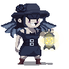

<html data-bs-theme="light">
<!-- Mirrored from sfl.world/util/flowers by HTTrack Website Copier/3.x [XR&CO'2014], Fri, 28 Mar 2025 04:16:46 GMT -->
<!-- Added by HTTrack --><meta http-equiv="content-type" content="text/html;charset=utf-8" /><!-- /Added by HTTrack -->
<head><meta charset="utf8"/><base /><title>Flowers Info - Sunflower Land</title><meta name="viewport" content="width=device-width, initial-scale=1"/><link rel="icon" type="image/png" sizes="32x32" href="../favicon.png"/><link rel="stylesheet" href="../../cdn.jsdelivr.net/npm/bootstrap-icons%401.11.3/font/bootstrap-icons.css"/><!--link(rel='stylesheet', href='/bootstrap-icons/font/bootstrap-icons.min.css')--><link rel="stylesheet" href="../css/bootstrap.min.css"/><link rel="stylesheet" href="../tablesorter-master/dist/css/theme.ice.min.css"/><link rel="stylesheet" href="../css/app2de9.css?1743105668308"/><script src="../../ajax.googleapis.com/ajax/libs/jquery/3.7.1/jquery.min.js"></script><script src="../js/bootstrap.bundle.min.js"></script><script src="../js/js.cookie.min.js"></script><script src="../js/jquery.sparkline.min.js"></script><script type="text/javascript" src="../js/kit.fontawesome.com_4d903c36a7.js"></script><script type="text/javascript" src="../tablesorter-master/dist/js/jquery.tablesorter.min.js"></script><script type="text/javascript" src="../js/main2de9.js?1743105668308"></script></head>
<!-- Mirrored from sfl.world/util/flowers by HTTrack Website Copier/3.x [XR&CO'2014], Fri, 28 Mar 2025 04:16:46 GMT -->
</html><body><script async="" src="https://www.googletagmanager.com/gtag/js?id=G-E026X3SKE2"></script><script>window.dataLayer = window.dataLayer || [];
function gtag() {
    dataLayer.push(arguments);
}
gtag('js', new Date());
gtag('config', 'G-E026X3SKE2');
</script><script type="text/javascript">(function(m,e,t,r,i,k,a){m[i]=m[i]||function(){(m[i].a=m[i].a||[]).push(arguments)};
    m[i].l=1*new Date();
    for (var j = 0; j < document.scripts.length; j++) {if (document.scripts[j].src === r) { return; }}
    k=e.createElement(t),a=e.getElementsByTagName(t)[0],k.async=1,k.src=r,a.parentNode.insertBefore(k,a)})
(window, document, "script", "../../mc.yandex.ru/metrika/tag.js", "ym");
ym(94806911, "init", {
    clickmap:true,
    trackLinks:true,
    accurateTrackBounce:true
});</script><noscript></noscript><div></div><nav class="py-2 bg-body-tertiary border-bottom m-bottom-10"><div class="container flex-wrap"><div class="row"><div class="col-12 col-md-4 ta-left"><a href="../index.html" aria-current="page" class="nav-link"><div class="h5">Sunflower Land World&nbsp;<small class="c_gray400">v0.9.8</small></div></a><div class="small0">Join our<a target="_blank" href="https://t.me/sfl_world" class="link-secondary m-left-3 m-right-3"><i class="bi bi-telegram m-right-3"></i><b>group</b></a>for more details!</div></div><div class="col-12 col-md-4 ta-left m-top-5"><div class="small0"><div class="h6">Looking for automatic notifications on Telegram?</div><div>Try it out!&nbsp;<a target="_blank" href="https://t.me/sfl_notice_bot?start=webHead" class="link-primary"><i class="bi bi-telegram m-right-3"></i><b>bot</b></a></div></div></div><div class="col-12 col-md-4 ta-right"><nav class="navbar navbar-expand bg-body-tertiary"><ul class="navbar-nav me-auto mb-2 mb-lg-0"><li class="nav-item dropdown"><a href="#" role="button" data-bs-toggle="dropdown" aria-expanded="false" class="nav-link dropdown-toggle">Util</a><ul class="dropdown-menu"><li><a href="p2p-calc.html" class="dropdown-item">P2P Trading Calculator</a></li><li><a href="prices.html" class="dropdown-item">Compare prices</a></li><li><a href="factions.html" class="dropdown-item">Factions</a></li><li><a href="../tools/skills/index.html" class="dropdown-item">Skill Calculator</a></li><li class="hide"><a href="fishing.html" class="dropdown-item">Fishing<div class="badge text-bg-danger m-left-5">deprecated</div></a></li><li class="hide"><a href="flowers.html" class="dropdown-item">Flowers<div class="badge text-bg-danger m-left-5">moved to Info<span class="bi bi-arrow-right m-left-5"></span></div></a></li><li><a href="api.html" class="dropdown-item">API</a></li><li><a href="https://t.me/sfl_notice_bot?start=webMenu" target="_blank" class="dropdown-item">Telegram Notification Bot</a></li><li><a href="https://discord.gg/NAq8UDFqZK" target="_blank" class="dropdown-item">Discord Notification Bot</a></li></ul></li><li class="nav-item dropdown"><a href="#" role="button" data-bs-toggle="dropdown" aria-expanded="false" class="nav-link dropdown-toggle">Info</a><ul class="dropdown-menu"><li><a href="../info/animals.html" class="dropdown-item">Animals</a></li><li><a href="../info/auctions.html" class="dropdown-item">Auctions</a></li><li><a href="../info/bumpkin.html" class="dropdown-item">Bumpkin XP</a></li><li><a href="../info/chapter.html" class="dropdown-item">Chapter progress</a></li><li><a href="../info/chests.html" class="dropdown-item">Chests</a></li><li><a href="../info/const.html" class="dropdown-item">Constants</a></li><li><a href="../info/cooking.html" class="dropdown-item">Cooking</a></li><li><a href="../info/crafting.html" class="dropdown-item">Crafting Box</a></li><li><a href="../info/deliveries.html" class="dropdown-item">Deliveries</a></li><li><a href="../info/fish-xp.html" class="dropdown-item">Fish XP</a></li><li><a href="../info/fishing.html" class="dropdown-item">Fishing</a></li><li><a href="../info/flowers.html" class="dropdown-item">Flowers</a></li><li><a href="../info/expansion.html" class="dropdown-item">Land Expansion</a></li><li><a href="../info/skills.html" class="dropdown-item">Revamp Skills Tree</a></li><li><a href="../info/stat.html" class="dropdown-item">Statistics</a></li><li><a href="../top/index.html" class="dropdown-item">Top lists</a></li></ul></li><li class="nav-item dropdown"><a href="#" role="button" data-bs-toggle="dropdown" aria-expanded="false" class="nav-link dropdown-toggle">NFT</a><ul class="dropdown-menu"><li><a href="../nft/boost.html" class="dropdown-item">With boosts</a></li><li><a href="../nft/land.html" class="dropdown-item">All Collectibles</a></li><li><a href="../nft/bumpkin.html" class="dropdown-item">All Wearables</a></li><li><a href="../info/buds.html" class="dropdown-item">All Buds</a></li><li><a href="../nft/s09.html" class="dropdown-item">[s09] Feb 2025 Winds of Change</a></li><li><a href="../nft/s08.html" class="dropdown-item">[s08] Nov 2024 Bull Run</a></li><li><a href="../nft/s07.html" class="dropdown-item">[s07] Aug 2024 Pharaoh's Treasure</a></li><li><a href="../nft/s06.html" class="dropdown-item">[s06] May 2024 Clash of Factions</a></li><li><a href="../nft/s05.html" class="dropdown-item">[s05] Feb 2024 Spring Blossom</a></li><li><a href="../nft/s04.html" class="dropdown-item">[s04] Nov 2023 Catch the Kraken</a></li></ul></li><a href="#" role="button" data-bs-toggle="dropdown" aria-expanded="false" class="nav-link dropdown-toggle">OS</a><ul class="dropdown-menu"><li><a href="../listings/land/opensea.html" class="dropdown-item">OpenSea Land listings</a></li><li><a href="../listings/bud/opensea.html" class="dropdown-item">OpenSea Bud listings</a></li></ul></ul><ul class="navbar-nav me-auto mb-2 mb-lg-0"><li class="nav-item"><button id="btnSwitch" class="btn btn-secondary"><i class="bi bi-brightness-high"></i></button></li></ul></nav></div></div></div></nav><div class="container text-left"><div class="row"><div class="col-12 col-md-4 m-top-10"><div class="input-group"><input id="land_id" type="number" onkeypress="handle(event,'land')" placeholder="Farm ID" aria-label="Farm ID" aria-describedby="button-addon2" class="form-control"/><button id="inputGroupFileAddon04" type="button" onclick="go('land')" class="btn btn-outline-secondary">Open</button></div></div><div class="col-12 col-md-4 m-top-10"></div><div class="col-12 col-md-4"></div></div></div><script defer src="https://static.cloudflareinsights.com/beacon.min.js/vcd15cbe7772f49c399c6a5babf22c1241717689176015" integrity="sha512-ZpsOmlRQV6y907TI0dKBHq9Md29nnaEIPlkf84rnaERnq6zvWvPUqr2ft8M1aS28oN72PdrCzSjY4U6VaAw1EQ==" data-cf-beacon='{"rayId":"92744e2d3ad6ce35","version":"2025.1.0","r":1,"serverTiming":{"name":{"cfExtPri":true,"cfL4":true,"cfSpeedBrain":true,"cfCacheStatus":true}},"token":"84bdd7ab571447d8b8f4279e974f5112","b":1}' crossorigin="anonymous"></script>
</body><script>var day_time = </script><script async="" src="http://sfl.world/js/util/fishing.js?1743105668308"></script><div class="container"><nav class="navbar bg-body-tertiary m-top-10 d-flex justify-content-start p-10"><div class="mb-auto"><b>Base points</b><div class="small">Favorite flowers gives +4-7 bonus points</div><div class="navbar d-flex justify-content-start"><div class="mb-auto m-right-10"><div>All Pansy: <b>3</b></div><div>All Cosmos: <b>3</b></div><div>All Balloon: <b>5</b></div><div>All Carnation: <b>5</b></div><div>All Daffodil: <b>7</b></div><div>All Lotus: <b>7</b></div></div><div class="mb-auto m-right-10"><div>All Edelweiss: <b>4</b></div><div>All Gladiolus: <b>4</b></div><div>All Lavender: <b>4</b></div><div>All Clover: <b>4</b></div></div><div class="mb-auto m-right-10"><div>Prism Petal: <b>12</b></div><div>Celestial Frostbloom: <b>12</b></div><div>Primula Enigma: <b>12</b></div></div></div></div></nav><div class="row"><div class="col-12 m-top-10"><div class="card m-bottom-10"><div class="card-header h5">Sunpetal Seed (1 Day)</div><div class="d-flex align-content-start flex-wrap p-10"><div class="mb-auto m-right-10"><table class="w175"><thead><tr><th class="ta-left small">Red Pansy</th></tr></thead><tbody><tr><td class="p-2 ta-left text-secondary"><div class="small m-left-20">can be grown from<br><b>Sunpetal Seed</b> +</div></td></tr><tr><td class="p-2 ta-left small">Radish</td></tr><tr><td class="p-2 ta-left small">Banana</td></tr><tr><td class="p-2 ta-left small"><span class="m-right-3">(1d)</span>Red Cosmos</td></tr><tr><td class="p-2 ta-left small"><span class="m-right-3">(2d)</span>Purple Daffodil</td></tr><tr><td class="p-2 ta-left small"><span class="m-right-3">(2d)</span>Red Balloon Flower</td></tr><tr><td class="p-2 ta-left small"><span class="m-right-3">(5d)</span>Red Lotus</td></tr><tr><td class="p-2 ta-left small"><span class="m-right-3">(5d)</span>Primula Enigma</td></tr></tbody></table><div class="m-bottom-10"></div></div><div class="mb-auto m-right-10"><table class="w175"><thead><tr><th class="ta-left small">Yellow Pansy</th></tr></thead><tbody><tr><td class="p-2 ta-left text-secondary"><div class="small m-left-20">can be grown from<br><b>Sunpetal Seed</b> +</div></td></tr><tr><td class="p-2 ta-left small">Sunflower</td></tr><tr><td class="p-2 ta-left small">Apple</td></tr><tr><td class="p-2 ta-left small"><span class="m-right-3">(1d)</span>Red Pansy</td></tr><tr><td class="p-2 ta-left small"><span class="m-right-3">(2d)</span>Red Daffodil</td></tr><tr><td class="p-2 ta-left small"><span class="m-right-3">(2d)</span>Yellow Balloon Flower</td></tr><tr><td class="p-2 ta-left small"><span class="m-right-3">(5d)</span>Yellow Carnation</td></tr></tbody></table><div class="m-bottom-10"></div></div><div class="mb-auto m-right-10"><table class="w175"><thead><tr><th class="ta-left small">Purple Pansy</th></tr></thead><tbody><tr><td class="p-2 ta-left text-secondary"><div class="small m-left-20">can be grown from<br><b>Sunpetal Seed</b> +</div></td></tr><tr><td class="p-2 ta-left small"><span class="m-right-3">(1d)</span>Blue Pansy</td></tr><tr><td class="p-2 ta-left small"><span class="m-right-3">(2d)</span>Purple Balloon Flower</td></tr><tr><td class="p-2 ta-left small"><span class="m-right-3">(5d)</span>Purple Carnation</td></tr></tbody></table><div class="m-top-5"></div><button type="button" onclick="$('#r1').slideToggle('fast')" class="btn btn-light"><i class="bi bi-chevron-double-down m-right-5"></i><b>Best recipe (3d)</b></button><div id="r1" class="hide alert alert-warning small m-top-10 p-5"><div>(1d) Purple Cosmos</div><div class="m-left-25"><div class="bi bi-arrow-down"></div></div><div>(1d) Blue Pansy</div><div class="m-left-25"><div class="bi bi-arrow-down"></div></div><div>(1d) Purple Pansy</div></div><div class="m-bottom-10"></div></div><div class="mb-auto m-right-10"><table class="w175"><thead><tr><th class="ta-left small">White Pansy</th></tr></thead><tbody><tr><td class="p-2 ta-left text-secondary"><div class="small m-left-20">can be grown from<br><b>Sunpetal Seed</b> +</div></td></tr><tr><td class="p-2 ta-left small"><span class="m-right-3">(1d)</span>Yellow Cosmos</td></tr></tbody></table><div class="m-top-5"></div><button type="button" onclick="$('#r2').slideToggle('fast')" class="btn btn-light"><i class="bi bi-chevron-double-down m-right-5"></i><b>Best recipe (3d)</b></button><div id="r2" class="hide alert alert-warning small m-top-10 p-5"><div>(1d) Yellow Pansy</div><div class="m-left-25"><div class="bi bi-arrow-down"></div></div><div>(1d) Yellow Cosmos</div><div class="m-left-25"><div class="bi bi-arrow-down"></div></div><div>(1d) White Pansy</div></div><div class="m-bottom-10"></div></div><div class="mb-auto m-right-10"><table class="w175"><thead><tr><th class="ta-left small">Blue Pansy</th></tr></thead><tbody><tr><td class="p-2 ta-left text-secondary"><div class="small m-left-20">can be grown from<br><b>Sunpetal Seed</b> +</div></td></tr><tr><td class="p-2 ta-left small"><span class="m-right-3">(1d)</span>Purple Cosmos</td></tr><tr><td class="p-2 ta-left small"><span class="m-right-3">(1d)</span>White Pansy</td></tr><tr><td class="p-2 ta-left small"><span class="m-right-3">(1d)</span>White Cosmos</td></tr><tr><td class="p-2 ta-left small"><span class="m-right-3">(2d)</span>White Daffodil</td></tr><tr><td class="p-2 ta-left small"><span class="m-right-3">(2d)</span>Blue Daffodil</td></tr><tr><td class="p-2 ta-left small"><span class="m-right-3">(5d)</span>White Carnation</td></tr></tbody></table><div class="m-top-5"></div><button type="button" onclick="$('#r3').slideToggle('fast')" class="btn btn-light"><i class="bi bi-chevron-double-down m-right-5"></i><b>Best recipe (2d)</b></button><div id="r3" class="hide alert alert-warning small m-top-10 p-5"><div>(1d) Purple Cosmos</div><div class="m-left-25"><div class="bi bi-arrow-down"></div></div><div>(1d) Blue Pansy</div></div><div class="m-bottom-10"></div></div></div><div class="d-flex align-content-start flex-wrap p-10"><div class="mb-auto m-right-10"><table class="w175"><thead><tr><th class="ta-left small">Red Cosmos</th></tr></thead><tbody><tr><td class="p-2 ta-left text-secondary"><div class="small m-left-20">can be grown from<br><b>Sunpetal Seed</b> +</div></td></tr><tr><td class="p-2 ta-left small"><span class="m-right-3">(2d)</span>Yellow Daffodil</td></tr><tr><td class="p-2 ta-left small"><span class="m-right-3">(5d)</span>Purple Lotus</td></tr></tbody></table><div class="m-top-5"></div><button type="button" onclick="$('#r4').slideToggle('fast')" class="btn btn-light"><i class="bi bi-chevron-double-down m-right-5"></i><b>Best recipe (8d)</b></button><div id="r4" class="hide alert alert-warning small m-top-10 p-5"><div>(5d) White Lotus</div><div class="m-left-25"><div class="bi bi-arrow-down"></div></div><div>(2d) Yellow Daffodil</div><div class="m-left-25"><div class="bi bi-arrow-down"></div></div><div>(1d) Red Cosmos</div></div><div class="m-bottom-10"></div></div><div class="mb-auto m-right-10"><table class="w175"><thead><tr><th class="ta-left small">Yellow Cosmos</th></tr></thead><tbody><tr><td class="p-2 ta-left text-secondary"><div class="small m-left-20">can be grown from<br><b>Sunpetal Seed</b> +</div></td></tr><tr><td class="p-2 ta-left small"><span class="m-right-3">(1d)</span>Yellow Pansy</td></tr><tr><td class="p-2 ta-left small"><span class="m-right-3">(2d)</span>White Balloon Flower</td></tr><tr><td class="p-2 ta-left small"><span class="m-right-3">(5d)</span>Red Carnation</td></tr></tbody></table><div class="m-top-5"></div><button type="button" onclick="$('#r5').slideToggle('fast')" class="btn btn-light"><i class="bi bi-chevron-double-down m-right-5"></i><b>Best recipe (2d)</b></button><div id="r5" class="hide alert alert-warning small m-top-10 p-5"><div>(1d) Yellow Pansy</div><div class="m-left-25"><div class="bi bi-arrow-down"></div></div><div>(1d) Yellow Cosmos</div></div><div class="m-bottom-10"></div></div><div class="mb-auto m-right-10"><table class="w175"><thead><tr><th class="ta-left small">Purple Cosmos</th></tr></thead><tbody><tr><td class="p-2 ta-left text-secondary"><div class="small m-left-20">can be grown from<br><b>Sunpetal Seed</b> +</div></td></tr><tr><td class="p-2 ta-left small">Beetroot</td></tr><tr><td class="p-2 ta-left small">Eggplant</td></tr><tr><td class="p-2 ta-left small">Kale</td></tr><tr><td class="p-2 ta-left small"><span class="m-right-3">(1d)</span>Blue Cosmos</td></tr><tr><td class="p-2 ta-left small"><span class="m-right-3">(2d)</span>Blue Balloon Flower</td></tr><tr><td class="p-2 ta-left small"><span class="m-right-3">(2d)</span>Celestial Frostbloom</td></tr></tbody></table><div class="m-bottom-10"></div></div><div class="mb-auto m-right-10"><table class="w175"><thead><tr><th class="ta-left small">White Cosmos</th></tr></thead><tbody><tr><td class="p-2 ta-left text-secondary"><div class="small m-left-20">can be grown from<br><b>Sunpetal Seed</b> +</div></td></tr><tr><td class="p-2 ta-left small"><span class="m-right-3">(1d)</span>Prism Petal</td></tr><tr><td class="p-2 ta-left small"><span class="m-right-3">(5d)</span>Yellow Lotus</td></tr></tbody></table><div class="m-top-5"></div><button type="button" onclick="$('#r6').slideToggle('fast')" class="btn btn-light"><i class="bi bi-chevron-double-down m-right-5"></i><b>Best recipe (7d)</b></button><div id="r6" class="hide alert alert-warning small m-top-10 p-5"><div>(1d) Red Pansy</div><div class="m-left-25"><div class="bi bi-arrow-down"></div></div><div>(5d) Yellow Lotus</div><div class="m-left-25"><div class="bi bi-arrow-down"></div></div><div>(1d) White Cosmos</div></div><div class="m-bottom-10"></div></div><div class="mb-auto m-right-10"><table class="w175"><thead><tr><th class="ta-left small">Blue Cosmos</th></tr></thead><tbody><tr><td class="p-2 ta-left text-secondary"><div class="small m-left-20">can be grown from<br><b>Sunpetal Seed</b> +</div></td></tr><tr><td class="p-2 ta-left small">Cauliflower</td></tr><tr><td class="p-2 ta-left small">Parsnip</td></tr><tr><td class="p-2 ta-left small">Blueberry</td></tr><tr><td class="p-2 ta-left small"><span class="m-right-3">(1d)</span>Purple Pansy</td></tr><tr><td class="p-2 ta-left small"><span class="m-right-3">(5d)</span>White Lotus</td></tr><tr><td class="p-2 ta-left small"><span class="m-right-3">(5d)</span>Blue Carnation</td></tr></tbody></table><div class="m-bottom-10"></div></div></div><div class="d-flex align-content-start flex-wrap p-10"><div class="mb-auto m-right-10"><table class="w175"><thead><tr><th class="ta-left small">Prism Petal</th></tr></thead><tbody><tr><td class="p-2 ta-left text-secondary"><div class="small m-left-20">can be grown from<br><b>Sunpetal Seed</b> +</div></td></tr><tr><td class="p-2 ta-left small"><span class="m-right-3">(5d)</span>Blue Lotus</td></tr></tbody></table><div class="m-top-5"></div><button type="button" onclick="$('#r7').slideToggle('fast')" class="btn btn-light"><i class="bi bi-chevron-double-down m-right-5"></i><b>Best recipe (8d)</b></button><div id="r7" class="hide alert alert-warning small m-top-10 p-5"><div>(1d) Purple Cosmos</div><div class="m-left-25"><div class="bi bi-arrow-down"></div></div><div>(1d) Blue Pansy</div><div class="m-left-25"><div class="bi bi-arrow-down"></div></div><div>(5d) Blue Lotus</div><div class="m-left-25"><div class="bi bi-arrow-down"></div></div><div>(1d) Prism Petal</div></div><div class="m-bottom-10"></div></div></div></div><div class="card m-bottom-10"><div class="card-header h5">Bloom Seed (2 Days)</div><div class="d-flex align-content-start flex-wrap p-10"><div class="mb-auto m-right-10"><table class="w175"><thead><tr><th class="ta-left small">Red Balloon Flower</th></tr></thead><tbody><tr><td class="p-2 ta-left text-secondary"><div class="small m-left-20">can be grown from<br><b>Bloom Seed</b> +</div></td></tr><tr><td class="p-2 ta-left small">Sunflower</td></tr><tr><td class="p-2 ta-left small">Beetroot</td></tr><tr><td class="p-2 ta-left small">Apple</td></tr><tr><td class="p-2 ta-left small">Banana</td></tr><tr><td class="p-2 ta-left small"><span class="m-right-3">(1d)</span>Purple Pansy</td></tr><tr><td class="p-2 ta-left small"><span class="m-right-3">(1d)</span>Red Pansy</td></tr><tr><td class="p-2 ta-left small"><span class="m-right-3">(2d)</span>Red Daffodil</td></tr><tr><td class="p-2 ta-left small"><span class="m-right-3">(2d)</span>Yellow Daffodil</td></tr><tr><td class="p-2 ta-left small"><span class="m-right-3">(2d)</span>Purple Daffodil</td></tr><tr><td class="p-2 ta-left small"><span class="m-right-3">(5d)</span>Yellow Carnation</td></tr></tbody></table><div class="m-bottom-10"></div></div><div class="mb-auto m-right-10"><table class="w175"><thead><tr><th class="ta-left small">Yellow Balloon Flower</th></tr></thead><tbody><tr><td class="p-2 ta-left text-secondary"><div class="small m-left-20">can be grown from<br><b>Bloom Seed</b> +</div></td></tr><tr><td class="p-2 ta-left small"><span class="m-right-3">(5d)</span>Yellow Lotus</td></tr></tbody></table><div class="m-top-5"></div><button type="button" onclick="$('#r8').slideToggle('fast')" class="btn btn-light"><i class="bi bi-chevron-double-down m-right-5"></i><b>Best recipe (8d)</b></button><div id="r8" class="hide alert alert-warning small m-top-10 p-5"><div>(1d) Red Pansy</div><div class="m-left-25"><div class="bi bi-arrow-down"></div></div><div>(5d) Yellow Lotus</div><div class="m-left-25"><div class="bi bi-arrow-down"></div></div><div>(2d) Yellow Balloon Flower</div></div><div class="m-bottom-10"></div></div><div class="mb-auto m-right-10"><table class="w175"><thead><tr><th class="ta-left small">Purple Balloon Flower</th></tr></thead><tbody><tr><td class="p-2 ta-left text-secondary"><div class="small m-left-20">can be grown from<br><b>Bloom Seed</b> +</div></td></tr><tr><td class="p-2 ta-left small"><span class="m-right-3">(5d)</span>Blue Carnation</td></tr></tbody></table><div class="m-top-5"></div><button type="button" onclick="$('#r9').slideToggle('fast')" class="btn btn-light"><i class="bi bi-chevron-double-down m-right-5"></i><b>Best recipe (9d)</b></button><div id="r9" class="hide alert alert-warning small m-top-10 p-5"><div>(2d) Purple Daffodil</div><div class="m-left-25"><div class="bi bi-arrow-down"></div></div><div>(5d) Blue Carnation</div><div class="m-left-25"><div class="bi bi-arrow-down"></div></div><div>(2d) Purple Balloon Flower</div></div><div class="m-bottom-10"></div></div><div class="mb-auto m-right-10"><table class="w175"><thead><tr><th class="ta-left small">White Balloon Flower</th></tr></thead><tbody><tr><td class="p-2 ta-left text-secondary"><div class="small m-left-20">can be grown from<br><b>Bloom Seed</b> +</div></td></tr><tr><td class="p-2 ta-left small"><span class="m-right-3">(1d)</span>White Cosmos</td></tr><tr><td class="p-2 ta-left small"><span class="m-right-3">(2d)</span>Blue Daffodil</td></tr><tr><td class="p-2 ta-left small"><span class="m-right-3">(2d)</span>White Daffodil</td></tr><tr><td class="p-2 ta-left small"><span class="m-right-3">(2d)</span>White Balloon Flower</td></tr></tbody></table><div class="m-top-5"></div><button type="button" onclick="$('#r10').slideToggle('fast')" class="btn btn-light"><i class="bi bi-chevron-double-down m-right-5"></i><b>Best recipe (6d)</b></button><div id="r10" class="hide alert alert-warning small m-top-10 p-5"><div>(1d) Yellow Pansy</div><div class="m-left-25"><div class="bi bi-arrow-down"></div></div><div>(1d) Yellow Cosmos</div><div class="m-left-25"><div class="bi bi-arrow-down"></div></div><div>(2d) White Daffodil</div><div class="m-left-25"><div class="bi bi-arrow-down"></div></div><div>(2d) White Balloon Flower</div></div><div class="m-bottom-10"></div></div><div class="mb-auto m-right-10"><table class="w175"><thead><tr><th class="ta-left small">Blue Balloon Flower</th></tr></thead><tbody><tr><td class="p-2 ta-left text-secondary"><div class="small m-left-20">can be grown from<br><b>Bloom Seed</b> +</div></td></tr><tr><td class="p-2 ta-left small">Cauliflower</td></tr><tr><td class="p-2 ta-left small">Parsnip</td></tr><tr><td class="p-2 ta-left small">Eggplant</td></tr><tr><td class="p-2 ta-left small">Kale</td></tr><tr><td class="p-2 ta-left small"><span class="m-right-3">(1d)</span>Blue Pansy</td></tr><tr><td class="p-2 ta-left small"><span class="m-right-3">(1d)</span>Blue Cosmos</td></tr><tr><td class="p-2 ta-left small"><span class="m-right-3">(1d)</span>Purple Cosmos</td></tr><tr><td class="p-2 ta-left small"><span class="m-right-3">(2d)</span>Blue Balloon Flower</td></tr><tr><td class="p-2 ta-left small"><span class="m-right-3">(2d)</span>Celestial Frostbloom</td></tr></tbody></table><div class="m-bottom-10"></div></div></div><div class="d-flex align-content-start flex-wrap p-10"><div class="mb-auto m-right-10"><table class="w175"><thead><tr><th class="ta-left small">Red Daffodil</th></tr></thead><tbody><tr><td class="p-2 ta-left text-secondary"><div class="small m-left-20">can be grown from<br><b>Bloom Seed</b> +</div></td></tr><tr><td class="p-2 ta-left small"><span class="m-right-3">(1d)</span>Yellow Pansy</td></tr><tr><td class="p-2 ta-left small"><span class="m-right-3">(2d)</span>Yellow Balloon Flower</td></tr><tr><td class="p-2 ta-left small"><span class="m-right-3">(5d)</span>Red Carnation</td></tr><tr><td class="p-2 ta-left small"><span class="m-right-3">(5d)</span>Primula Enigma</td></tr></tbody></table><div class="m-top-5"></div><button type="button" onclick="$('#r11').slideToggle('fast')" class="btn btn-light"><i class="bi bi-chevron-double-down m-right-5"></i><b>Best recipe (3d)</b></button><div id="r11" class="hide alert alert-warning small m-top-10 p-5"><div>(1d) Yellow Pansy</div><div class="m-left-25"><div class="bi bi-arrow-down"></div></div><div>(2d) Red Daffodil</div></div><div class="m-bottom-10"></div></div><div class="mb-auto m-right-10"><table class="w175"><thead><tr><th class="ta-left small">Yellow Daffodil</th></tr></thead><tbody><tr><td class="p-2 ta-left text-secondary"><div class="small m-left-20">can be grown from<br><b>Bloom Seed</b> +</div></td></tr><tr><td class="p-2 ta-left small"><span class="m-right-3">(1d)</span>Red Cosmos</td></tr><tr><td class="p-2 ta-left small"><span class="m-right-3">(5d)</span>White Carnation</td></tr><tr><td class="p-2 ta-left small"><span class="m-right-3">(5d)</span>White Lotus</td></tr></tbody></table><div class="m-top-5"></div><button type="button" onclick="$('#r12').slideToggle('fast')" class="btn btn-light"><i class="bi bi-chevron-double-down m-right-5"></i><b>Best recipe (7d)</b></button><div id="r12" class="hide alert alert-warning small m-top-10 p-5"><div>(5d) White Lotus</div><div class="m-left-25"><div class="bi bi-arrow-down"></div></div><div>(2d) Yellow Daffodil</div></div><div class="m-bottom-10"></div></div><div class="mb-auto m-right-10"><table class="w175"><thead><tr><th class="ta-left small">Purple Daffodil</th></tr></thead><tbody><tr><td class="p-2 ta-left text-secondary"><div class="small m-left-20">can be grown from<br><b>Bloom Seed</b> +</div></td></tr><tr><td class="p-2 ta-left small">Radish</td></tr><tr><td class="p-2 ta-left small">Blueberry</td></tr><tr><td class="p-2 ta-left small"><span class="m-right-3">(2d)</span>Red Balloon Flower</td></tr><tr><td class="p-2 ta-left small"><span class="m-right-3">(5d)</span>Red Lotus</td></tr><tr><td class="p-2 ta-left small"><span class="m-right-3">(5d)</span>Blue Lotus</td></tr></tbody></table><div class="m-bottom-10"></div></div><div class="mb-auto m-right-10"><table class="w175"><thead><tr><th class="ta-left small">White Daffodil</th></tr></thead><tbody><tr><td class="p-2 ta-left text-secondary"><div class="small m-left-20">can be grown from<br><b>Bloom Seed</b> +</div></td></tr><tr><td class="p-2 ta-left small"><span class="m-right-3">(1d)</span>Yellow Cosmos</td></tr><tr><td class="p-2 ta-left small"><span class="m-right-3">(1d)</span>Prism Petal</td></tr></tbody></table><div class="m-top-5"></div><button type="button" onclick="$('#r13').slideToggle('fast')" class="btn btn-light"><i class="bi bi-chevron-double-down m-right-5"></i><b>Best recipe (4d)</b></button><div id="r13" class="hide alert alert-warning small m-top-10 p-5"><div>(1d) Yellow Pansy</div><div class="m-left-25"><div class="bi bi-arrow-down"></div></div><div>(1d) Yellow Cosmos</div><div class="m-left-25"><div class="bi bi-arrow-down"></div></div><div>(2d) White Daffodil</div></div><div class="m-bottom-10"></div></div><div class="mb-auto m-right-10"><table class="w175"><thead><tr><th class="ta-left small">Blue Daffodil</th></tr></thead><tbody><tr><td class="p-2 ta-left text-secondary"><div class="small m-left-20">can be grown from<br><b>Bloom Seed</b> +</div></td></tr><tr><td class="p-2 ta-left small"><span class="m-right-3">(2d)</span>Purple Balloon Flower</td></tr><tr><td class="p-2 ta-left small"><span class="m-right-3">(5d)</span>Purple Carnation</td></tr><tr><td class="p-2 ta-left small"><span class="m-right-3">(5d)</span>Purple Lotus</td></tr></tbody></table><div class="m-top-5"></div><button type="button" onclick="$('#r14').slideToggle('fast')" class="btn btn-light"><i class="bi bi-chevron-double-down m-right-5"></i><b>Best recipe (7d)</b></button><div id="r14" class="hide alert alert-warning small m-top-10 p-5"><div>(5d) Purple Carnation</div><div class="m-left-25"><div class="bi bi-arrow-down"></div></div><div>(2d) Blue Daffodil</div></div><div class="m-bottom-10"></div></div></div><div class="d-flex align-content-start flex-wrap p-10"><div class="mb-auto m-right-10"><table class="w175"><thead><tr><th class="ta-left small">Celestial Frostbloom</th></tr></thead><tbody><tr><td class="p-2 ta-left text-secondary"><div class="small m-left-20">can be grown from<br><b>Bloom Seed</b> +</div></td></tr><tr><td class="p-2 ta-left small"><span class="m-right-3">(1d)</span>White Pansy</td></tr></tbody></table><div class="m-top-5"></div><button type="button" onclick="$('#r15').slideToggle('fast')" class="btn btn-light"><i class="bi bi-chevron-double-down m-right-5"></i><b>Best recipe (5d)</b></button><div id="r15" class="hide alert alert-warning small m-top-10 p-5"><div>(1d) Yellow Pansy</div><div class="m-left-25"><div class="bi bi-arrow-down"></div></div><div>(1d) Yellow Cosmos</div><div class="m-left-25"><div class="bi bi-arrow-down"></div></div><div>(1d) White Pansy</div><div class="m-left-25"><div class="bi bi-arrow-down"></div></div><div>(2d) Celestial Frostbloom</div></div><div class="m-bottom-10"></div></div></div></div><div class="card m-bottom-10"><div class="card-header h5">Lily Seed (5 Days)</div><div class="d-flex align-content-start flex-wrap p-10"><div class="mb-auto m-right-10"><table class="w175"><thead><tr><th class="ta-left small">Red Carnation</th></tr></thead><tbody><tr><td class="p-2 ta-left text-secondary"><div class="small m-left-20">can be grown from<br><b>Lily Seed</b> +</div></td></tr><tr><td class="p-2 ta-left small"><span class="m-right-3">(1d)</span>Purple Pansy</td></tr></tbody></table><div class="m-top-5"></div><button type="button" onclick="$('#r16').slideToggle('fast')" class="btn btn-light"><i class="bi bi-chevron-double-down m-right-5"></i><b>Best recipe (8d)</b></button><div id="r16" class="hide alert alert-warning small m-top-10 p-5"><div>(1d) Purple Cosmos</div><div class="m-left-25"><div class="bi bi-arrow-down"></div></div><div>(1d) Blue Pansy</div><div class="m-left-25"><div class="bi bi-arrow-down"></div></div><div>(1d) Purple Pansy</div><div class="m-left-25"><div class="bi bi-arrow-down"></div></div><div>(5d) Red Carnation</div></div><div class="m-bottom-10"></div></div><div class="mb-auto m-right-10"><table class="w175"><thead><tr><th class="ta-left small">Yellow Carnation</th></tr></thead><tbody><tr><td class="p-2 ta-left text-secondary"><div class="small m-left-20">can be grown from<br><b>Lily Seed</b> +</div></td></tr><tr><td class="p-2 ta-left small">Sunflower</td></tr><tr><td class="p-2 ta-left small"><span class="m-right-3">(1d)</span>Yellow Cosmos</td></tr><tr><td class="p-2 ta-left small"><span class="m-right-3">(5d)</span>Red Lotus</td></tr><tr><td class="p-2 ta-left small"><span class="m-right-3">(5d)</span>White Carnation</td></tr></tbody></table><div class="m-bottom-10"></div></div><div class="mb-auto m-right-10"><table class="w175"><thead><tr><th class="ta-left small">Purple Carnation</th></tr></thead><tbody><tr><td class="p-2 ta-left text-secondary"><div class="small m-left-20">can be grown from<br><b>Lily Seed</b> +</div></td></tr><tr><td class="p-2 ta-left small">Eggplant</td></tr><tr><td class="p-2 ta-left small">Blueberry</td></tr><tr><td class="p-2 ta-left small">Apple</td></tr><tr><td class="p-2 ta-left small"><span class="m-right-3">(1d)</span>Blue Cosmos</td></tr><tr><td class="p-2 ta-left small"><span class="m-right-3">(2d)</span>Blue Balloon Flower</td></tr><tr><td class="p-2 ta-left small"><span class="m-right-3">(5d)</span>Purple Lotus</td></tr></tbody></table><div class="m-bottom-10"></div></div><div class="mb-auto m-right-10"><table class="w175"><thead><tr><th class="ta-left small">White Carnation</th></tr></thead><tbody><tr><td class="p-2 ta-left text-secondary"><div class="small m-left-20">can be grown from<br><b>Lily Seed</b> +</div></td></tr><tr><td class="p-2 ta-left small"><span class="m-right-3">(1d)</span>Yellow Pansy</td></tr><tr><td class="p-2 ta-left small"><span class="m-right-3">(1d)</span>White Cosmos</td></tr><tr><td class="p-2 ta-left small"><span class="m-right-3">(1d)</span>Prism Petal</td></tr><tr><td class="p-2 ta-left small"><span class="m-right-3">(2d)</span>Yellow Daffodil</td></tr><tr><td class="p-2 ta-left small"><span class="m-right-3">(2d)</span>Celestial Frostbloom</td></tr></tbody></table><div class="m-top-5"></div><button type="button" onclick="$('#r17').slideToggle('fast')" class="btn btn-light"><i class="bi bi-chevron-double-down m-right-5"></i><b>Best recipe (6d)</b></button><div id="r17" class="hide alert alert-warning small m-top-10 p-5"><div>(1d) Yellow Pansy</div><div class="m-left-25"><div class="bi bi-arrow-down"></div></div><div>(5d) White Carnation</div></div><div class="m-bottom-10"></div></div><div class="mb-auto m-right-10"><table class="w175"><thead><tr><th class="ta-left small">Blue Carnation</th></tr></thead><tbody><tr><td class="p-2 ta-left text-secondary"><div class="small m-left-20">can be grown from<br><b>Lily Seed</b> +</div></td></tr><tr><td class="p-2 ta-left small"><span class="m-right-3">(2d)</span>Purple Daffodil</td></tr><tr><td class="p-2 ta-left small"><span class="m-right-3">(2d)</span>White Balloon Flower</td></tr><tr><td class="p-2 ta-left small"><span class="m-right-3">(5d)</span>Primula Enigma</td></tr></tbody></table><div class="m-top-5"></div><button type="button" onclick="$('#r18').slideToggle('fast')" class="btn btn-light"><i class="bi bi-chevron-double-down m-right-5"></i><b>Best recipe (7d)</b></button><div id="r18" class="hide alert alert-warning small m-top-10 p-5"><div>(2d) Purple Daffodil</div><div class="m-left-25"><div class="bi bi-arrow-down"></div></div><div>(5d) Blue Carnation</div></div><div class="m-bottom-10"></div></div></div><div class="d-flex align-content-start flex-wrap p-10"><div class="mb-auto m-right-10"><table class="w175"><thead><tr><th class="ta-left small">Red Lotus</th></tr></thead><tbody><tr><td class="p-2 ta-left text-secondary"><div class="small m-left-20">can be grown from<br><b>Lily Seed</b> +</div></td></tr><tr><td class="p-2 ta-left small">Beetroot</td></tr><tr><td class="p-2 ta-left small">Radish</td></tr><tr><td class="p-2 ta-left small"><span class="m-right-3">(1d)</span>Purple Cosmos</td></tr><tr><td class="p-2 ta-left small"><span class="m-right-3">(2d)</span>Red Balloon Flower</td></tr><tr><td class="p-2 ta-left small"><span class="m-right-3">(2d)</span>Yellow Balloon Flower</td></tr><tr><td class="p-2 ta-left small"><span class="m-right-3">(5d)</span>Purple Carnation</td></tr><tr><td class="p-2 ta-left small"><span class="m-right-3">(5d)</span>Yellow Carnation</td></tr><tr><td class="p-2 ta-left small"><span class="m-right-3">(5d)</span>Red Carnation</td></tr></tbody></table><div class="m-bottom-10"></div></div><div class="mb-auto m-right-10"><table class="w175"><thead><tr><th class="ta-left small">Yellow Lotus</th></tr></thead><tbody><tr><td class="p-2 ta-left text-secondary"><div class="small m-left-20">can be grown from<br><b>Lily Seed</b> +</div></td></tr><tr><td class="p-2 ta-left small"><span class="m-right-3">(1d)</span>Red Pansy</td></tr><tr><td class="p-2 ta-left small"><span class="m-right-3">(1d)</span>Red Cosmos</td></tr><tr><td class="p-2 ta-left small"><span class="m-right-3">(2d)</span>Red Daffodil</td></tr><tr><td class="p-2 ta-left small"><span class="m-right-3">(5d)</span>Yellow Lotus</td></tr></tbody></table><div class="m-top-5"></div><button type="button" onclick="$('#r19').slideToggle('fast')" class="btn btn-light"><i class="bi bi-chevron-double-down m-right-5"></i><b>Best recipe (6d)</b></button><div id="r19" class="hide alert alert-warning small m-top-10 p-5"><div>(1d) Red Pansy</div><div class="m-left-25"><div class="bi bi-arrow-down"></div></div><div>(5d) Yellow Lotus</div></div><div class="m-bottom-10"></div></div><div class="mb-auto m-right-10"><table class="w175"><thead><tr><th class="ta-left small">Purple Lotus</th></tr></thead><tbody><tr><td class="p-2 ta-left text-secondary"><div class="small m-left-20">can be grown from<br><b>Lily Seed</b> +</div></td></tr><tr><td class="p-2 ta-left small"><span class="m-right-3">(5d)</span>Blue Carnation</td></tr></tbody></table><div class="m-top-5"></div><button type="button" onclick="$('#r20').slideToggle('fast')" class="btn btn-light"><i class="bi bi-chevron-double-down m-right-5"></i><b>Best recipe (12d)</b></button><div id="r20" class="hide alert alert-warning small m-top-10 p-5"><div>(2d) Purple Daffodil</div><div class="m-left-25"><div class="bi bi-arrow-down"></div></div><div>(5d) Blue Carnation</div><div class="m-left-25"><div class="bi bi-arrow-down"></div></div><div>(5d) Purple Lotus</div></div><div class="m-bottom-10"></div></div><div class="mb-auto m-right-10"><table class="w175"><thead><tr><th class="ta-left small">White Lotus</th></tr></thead><tbody><tr><td class="p-2 ta-left text-secondary"><div class="small m-left-20">can be grown from<br><b>Lily Seed</b> +</div></td></tr><tr><td class="p-2 ta-left small">Cauliflower</td></tr><tr><td class="p-2 ta-left small">Parsnip</td></tr><tr><td class="p-2 ta-left small">Kale</td></tr><tr><td class="p-2 ta-left small">Banana</td></tr><tr><td class="p-2 ta-left small"><span class="m-right-3">(1d)</span>White Pansy</td></tr><tr><td class="p-2 ta-left small"><span class="m-right-3">(2d)</span>Blue Daffodil</td></tr><tr><td class="p-2 ta-left small"><span class="m-right-3">(5d)</span>Blue Lotus</td></tr><tr><td class="p-2 ta-left small"><span class="m-right-3">(5d)</span>White Lotus</td></tr></tbody></table><div class="m-bottom-10"></div></div><div class="mb-auto m-right-10"><table class="w175"><thead><tr><th class="ta-left small">Blue Lotus</th></tr></thead><tbody><tr><td class="p-2 ta-left text-secondary"><div class="small m-left-20">can be grown from<br><b>Lily Seed</b> +</div></td></tr><tr><td class="p-2 ta-left small"><span class="m-right-3">(1d)</span>Blue Pansy</td></tr><tr><td class="p-2 ta-left small"><span class="m-right-3">(2d)</span>White Daffodil</td></tr></tbody></table><div class="m-top-5"></div><button type="button" onclick="$('#r21').slideToggle('fast')" class="btn btn-light"><i class="bi bi-chevron-double-down m-right-5"></i><b>Best recipe (7d)</b></button><div id="r21" class="hide alert alert-warning small m-top-10 p-5"><div>(1d) Purple Cosmos</div><div class="m-left-25"><div class="bi bi-arrow-down"></div></div><div>(1d) Blue Pansy</div><div class="m-left-25"><div class="bi bi-arrow-down"></div></div><div>(5d) Blue Lotus</div></div><div class="m-bottom-10"></div></div></div><div class="d-flex align-content-start flex-wrap p-10"><div class="mb-auto m-right-10"><table class="w175"><thead><tr><th class="ta-left small">Primula Enigma</th></tr></thead><tbody><tr><td class="p-2 ta-left text-secondary"><div class="small m-left-20">can be grown from<br><b>Lily Seed</b> +</div></td></tr><tr><td class="p-2 ta-left small"><span class="m-right-3">(2d)</span>Purple Balloon Flower</td></tr></tbody></table><div class="m-top-5"></div><button type="button" onclick="$('#r22').slideToggle('fast')" class="btn btn-light"><i class="bi bi-chevron-double-down m-right-5"></i><b>Best recipe (14d)</b></button><div id="r22" class="hide alert alert-warning small m-top-10 p-5"><div>(2d) Purple Daffodil</div><div class="m-left-25"><div class="bi bi-arrow-down"></div></div><div>(5d) Blue Carnation</div><div class="m-left-25"><div class="bi bi-arrow-down"></div></div><div>(2d) Purple Balloon Flower</div><div class="m-left-25"><div class="bi bi-arrow-down"></div></div><div>(5d) Primula Enigma</div></div><div class="m-bottom-10"></div></div></div></div><div class="card m-bottom-10"><div class="card-header h5">Edelweiss Seed (3 Days)<div class="badge text-bg-warning m-left-10"><div class="small">in progress</div></div></div><div class="d-flex align-content-start flex-wrap p-10"><div class="mb-auto m-right-10"><table class="w175"><thead><tr><th class="ta-left small">Red Edelweiss</th></tr></thead><tbody><tr><td class="p-2 ta-left text-secondary"><div class="small m-left-20">can be grown from<br><b>Edelweiss Seed</b> +</div></td></tr><tr><td class="p-2 ta-left small">Artichoke</td></tr><tr><td class="p-2 ta-left small">Barley</td></tr><tr><td class="p-2 ta-left small"><span class="m-right-3">(3d)</span>Yellow Edelweiss</td></tr><tr><td class="p-2 ta-left small"><span class="m-right-3">(3d)</span>Purple Lavender</td></tr><tr><td class="p-2 ta-left small"><span class="m-right-3">(3d)</span>Red Clover</td></tr></tbody></table><div class="m-bottom-10"></div></div><div class="mb-auto m-right-10"><table class="w175"><thead><tr><th class="ta-left small">Yellow Edelweiss</th></tr></thead><tbody><tr><td class="p-2 ta-left text-secondary"><div class="small m-left-20">can be grown from<br><b>Edelweiss Seed</b> +</div></td></tr><tr><td class="p-2 ta-left small">Onion</td></tr><tr><td class="p-2 ta-left small"><span class="m-right-3">(3d)</span>Red Edelweiss</td></tr><tr><td class="p-2 ta-left small"><span class="m-right-3">(3d)</span>Yellow Gladiolus</td></tr><tr><td class="p-2 ta-left small"><span class="m-right-3">(3d)</span>Red Lavender</td></tr><tr><td class="p-2 ta-left small"><span class="m-right-3">(3d)</span>White Lavender</td></tr></tbody></table><div class="m-bottom-10"></div></div><div class="mb-auto m-right-10"><table class="w175"><thead><tr><th class="ta-left small">Purple Edelweiss</th></tr></thead><tbody><tr><td class="p-2 ta-left text-secondary"><div class="small m-left-20">can be grown from<br><b>Edelweiss Seed</b> +</div></td></tr><tr><td class="p-2 ta-left small">Rhubarb</td></tr><tr><td class="p-2 ta-left small">Pepper</td></tr><tr><td class="p-2 ta-left small"><span class="m-right-3">(3d)</span>Red Gladiolus</td></tr><tr><td class="p-2 ta-left small"><span class="m-right-3">(3d)</span>Purple Gladiolus</td></tr><tr><td class="p-2 ta-left small"><span class="m-right-3">(3d)</span>Blue Gladiolus</td></tr><tr><td class="p-2 ta-left small"><span class="m-right-3">(3d)</span>Blue Lavender</td></tr><tr><td class="p-2 ta-left small"><span class="m-right-3">(3d)</span>Blue Clover</td></tr></tbody></table><div class="m-bottom-10"></div></div><div class="mb-auto m-right-10"><table class="w175"><thead><tr><th class="ta-left small">White Edelweiss</th></tr></thead><tbody><tr><td class="p-2 ta-left text-secondary"><div class="small m-left-20">can be grown from<br><b>Edelweiss Seed</b> +</div></td></tr><tr><td class="p-2 ta-left small"><span class="m-right-3">(3d)</span>Blue Edelweiss</td></tr><tr><td class="p-2 ta-left small"><span class="m-right-3">(3d)</span>Yellow Clover</td></tr></tbody></table><div class="m-bottom-10"></div></div><div class="mb-auto m-right-10"><table class="w175"><thead><tr><th class="ta-left small">Blue Edelweiss</th></tr></thead><tbody><tr><td class="p-2 ta-left text-secondary"><div class="small m-left-20">can be grown from<br><b>Edelweiss Seed</b> +</div></td></tr><tr><td class="p-2 ta-left small"><span class="m-right-3">(3d)</span>Purple Edelweiss</td></tr><tr><td class="p-2 ta-left small"><span class="m-right-3">(3d)</span>White Edelweiss</td></tr><tr><td class="p-2 ta-left small"><span class="m-right-3">(3d)</span>White Gladiolus</td></tr><tr><td class="p-2 ta-left small"><span class="m-right-3">(3d)</span>Purple Clover</td></tr><tr><td class="p-2 ta-left small"><span class="m-right-3">(3d)</span>White Clover</td></tr></tbody></table><div class="m-bottom-10"></div></div></div></div><div class="card m-bottom-10"><div class="card-header h5">Gladiolus Seed (3 Days)<div class="badge text-bg-warning m-left-10"><div class="small">in progress</div></div></div><div class="d-flex align-content-start flex-wrap p-10"><div class="mb-auto m-right-10"><table class="w175"><thead><tr><th class="ta-left small">Red Gladiolus</th></tr></thead><tbody><tr><td class="p-2 ta-left text-secondary"><div class="small m-left-20">can be grown from<br><b>Gladiolus Seed</b> +</div></td></tr><tr><td class="p-2 ta-left small"><span class="m-right-3">(3d)</span>Yellow Edelweiss</td></tr></tbody></table><div class="m-bottom-10"></div></div><div class="mb-auto m-right-10"><table class="w175"><thead><tr><th class="ta-left small">Yellow Gladiolus</th></tr></thead><tbody><tr><td class="p-2 ta-left text-secondary"><div class="small m-left-20">can be grown from<br><b>Gladiolus Seed</b> +</div></td></tr><tr><td class="p-2 ta-left small">Pepper</td></tr><tr><td class="p-2 ta-left small">Onion</td></tr><tr><td class="p-2 ta-left small">Barley</td></tr><tr><td class="p-2 ta-left small"><span class="m-right-3">(3d)</span>Yellow Gladiolus</td></tr><tr><td class="p-2 ta-left small"><span class="m-right-3">(3d)</span>White Gladiolus</td></tr><tr><td class="p-2 ta-left small"><span class="m-right-3">(3d)</span>Red Lavender</td></tr><tr><td class="p-2 ta-left small"><span class="m-right-3">(3d)</span>White Lavender</td></tr><tr><td class="p-2 ta-left small"><span class="m-right-3">(3d)</span>Yellow Clover</td></tr></tbody></table><div class="m-bottom-10"></div></div><div class="mb-auto m-right-10"><table class="w175"><thead><tr><th class="ta-left small">Purple Gladiolus</th></tr></thead><tbody><tr><td class="p-2 ta-left text-secondary"><div class="small m-left-20">can be grown from<br><b>Gladiolus Seed</b> +</div></td></tr><tr><td class="p-2 ta-left small">Artichoke</td></tr><tr><td class="p-2 ta-left small"><span class="m-right-3">(3d)</span>Red Edelweiss</td></tr><tr><td class="p-2 ta-left small"><span class="m-right-3">(3d)</span>Red Gladiolus</td></tr><tr><td class="p-2 ta-left small"><span class="m-right-3">(3d)</span>Purple Gladiolus</td></tr></tbody></table><div class="m-bottom-10"></div></div><div class="mb-auto m-right-10"><table class="w175"><thead><tr><th class="ta-left small">White Gladiolus</th></tr></thead><tbody><tr><td class="p-2 ta-left text-secondary"><div class="small m-left-20">can be grown from<br><b>Gladiolus Seed</b> +</div></td></tr><tr><td class="p-2 ta-left small"><span class="m-right-3">(3d)</span>White Edelweiss</td></tr><tr><td class="p-2 ta-left small"><span class="m-right-3">(3d)</span>Blue Edelweiss</td></tr><tr><td class="p-2 ta-left small"><span class="m-right-3">(3d)</span>Blue Gladiolus</td></tr></tbody></table><div class="m-bottom-10"></div></div><div class="mb-auto m-right-10"><table class="w175"><thead><tr><th class="ta-left small">Blue Gladiolus</th></tr></thead><tbody><tr><td class="p-2 ta-left text-secondary"><div class="small m-left-20">can be grown from<br><b>Gladiolus Seed</b> +</div></td></tr><tr><td class="p-2 ta-left small">Rhubarb</td></tr><tr><td class="p-2 ta-left small"><span class="m-right-3">(3d)</span>Purple Lavender</td></tr><tr><td class="p-2 ta-left small"><span class="m-right-3">(3d)</span>Blue Lavender</td></tr><tr><td class="p-2 ta-left small"><span class="m-right-3">(3d)</span>Blue Clover</td></tr></tbody></table><div class="m-bottom-10"></div></div></div></div><div class="card m-bottom-10"><div class="card-header h5">Lavender Seed (3 Days)<div class="badge text-bg-warning m-left-10"><div class="small">in progress</div></div></div><div class="d-flex align-content-start flex-wrap p-10"><div class="mb-auto m-right-10"><table class="w175"><thead><tr><th class="ta-left small">Red Lavender</th></tr></thead><tbody><tr><td class="p-2 ta-left text-secondary"><div class="small m-left-20">can be grown from<br><b>Lavender Seed</b> +</div></td></tr><tr><td class="p-2 ta-left small">Pepper</td></tr><tr><td class="p-2 ta-left small">Artichoke</td></tr><tr><td class="p-2 ta-left small"><span class="m-right-3">(3d)</span>Red Edelweiss</td></tr><tr><td class="p-2 ta-left small"><span class="m-right-3">(3d)</span>Purple Edelweiss</td></tr><tr><td class="p-2 ta-left small"><span class="m-right-3">(3d)</span>Red Lavender</td></tr><tr><td class="p-2 ta-left small"><span class="m-right-3">(3d)</span>Purple Lavender</td></tr><tr><td class="p-2 ta-left small"><span class="m-right-3">(3d)</span>Yellow Clover</td></tr></tbody></table><div class="m-bottom-10"></div></div><div class="mb-auto m-right-10"><table class="w175"><thead><tr><th class="ta-left small">Yellow Lavender</th></tr></thead><tbody><tr><td class="p-2 ta-left text-secondary"><div class="small m-left-20">can be grown from<br><b>Lavender Seed</b> +</div></td></tr><tr><td class="p-2 ta-left small"><span class="m-right-3">(3d)</span>Red Gladiolus</td></tr><tr><td class="p-2 ta-left small"><span class="m-right-3">(3d)</span>Yellow Gladiolus</td></tr><tr><td class="p-2 ta-left small"><span class="m-right-3">(3d)</span>White Gladiolus</td></tr></tbody></table><div class="m-bottom-10"></div></div><div class="mb-auto m-right-10"><table class="w175"><thead><tr><th class="ta-left small">Purple Lavender</th></tr></thead><tbody><tr><td class="p-2 ta-left text-secondary"><div class="small m-left-20">can be grown from<br><b>Lavender Seed</b> +</div></td></tr><tr><td class="p-2 ta-left small"><span class="m-right-3">(3d)</span>Blue Lavender</td></tr></tbody></table><div class="m-bottom-10"></div></div><div class="mb-auto m-right-10"><table class="w175"><thead><tr><th class="ta-left small">White Lavender</th></tr></thead><tbody><tr><td class="p-2 ta-left text-secondary"><div class="small m-left-20">can be grown from<br><b>Lavender Seed</b> +</div></td></tr><tr><td class="p-2 ta-left small">Rhubarb</td></tr><tr><td class="p-2 ta-left small">Onion</td></tr><tr><td class="p-2 ta-left small">Barley</td></tr><tr><td class="p-2 ta-left small"><span class="m-right-3">(3d)</span>Yellow Edelweiss</td></tr><tr><td class="p-2 ta-left small"><span class="m-right-3">(3d)</span>White Lavender</td></tr></tbody></table><div class="m-bottom-10"></div></div><div class="mb-auto m-right-10"><table class="w175"><thead><tr><th class="ta-left small">Blue Lavender</th></tr></thead><tbody><tr><td class="p-2 ta-left text-secondary"><div class="small m-left-20">can be grown from<br><b>Lavender Seed</b> +</div></td></tr><tr><td class="p-2 ta-left small"><span class="m-right-3">(3d)</span>White Edelweiss</td></tr><tr><td class="p-2 ta-left small"><span class="m-right-3">(3d)</span>Blue Edelweiss</td></tr><tr><td class="p-2 ta-left small"><span class="m-right-3">(3d)</span>Purple Clover</td></tr><tr><td class="p-2 ta-left small"><span class="m-right-3">(3d)</span>White Clover</td></tr><tr><td class="p-2 ta-left small"><span class="m-right-3">(3d)</span>Blue Clover</td></tr></tbody></table><div class="m-bottom-10"></div></div></div></div><div class="card m-bottom-10"><div class="card-header h5">Clover Seed (3 Days)<div class="badge text-bg-warning m-left-10"><div class="small">in progress</div></div></div><div class="d-flex align-content-start flex-wrap p-10"><div class="mb-auto m-right-10"><table class="w175"><thead><tr><th class="ta-left small">Red Clover</th></tr></thead><tbody><tr><td class="p-2 ta-left text-secondary"><div class="small m-left-20">can be grown from<br><b>Clover Seed</b> +</div></td></tr><tr><td class="p-2 ta-left small"><span class="m-right-3">(3d)</span>Red Edelweiss</td></tr><tr><td class="p-2 ta-left small"><span class="m-right-3">(3d)</span>Purple Clover</td></tr></tbody></table><div class="m-bottom-10"></div></div><div class="mb-auto m-right-10"><table class="w175"><thead><tr><th class="ta-left small">Yellow Clover</th></tr></thead><tbody><tr><td class="p-2 ta-left text-secondary"><div class="small m-left-20">can be grown from<br><b>Clover Seed</b> +</div></td></tr><tr><td class="p-2 ta-left small">Pepper</td></tr><tr><td class="p-2 ta-left small">Onion</td></tr><tr><td class="p-2 ta-left small">Barley</td></tr><tr><td class="p-2 ta-left small"><span class="m-right-3">(3d)</span>Yellow Edelweiss</td></tr><tr><td class="p-2 ta-left small"><span class="m-right-3">(3d)</span>Red Gladiolus</td></tr><tr><td class="p-2 ta-left small"><span class="m-right-3">(3d)</span>White Lavender</td></tr><tr><td class="p-2 ta-left small"><span class="m-right-3">(3d)</span>Yellow Clover</td></tr></tbody></table><div class="m-bottom-10"></div></div><div class="mb-auto m-right-10"><table class="w175"><thead><tr><th class="ta-left small">Purple Clover</th></tr></thead><tbody><tr><td class="p-2 ta-left text-secondary"><div class="small m-left-20">can be grown from<br><b>Clover Seed</b> +</div></td></tr><tr><td class="p-2 ta-left small"><span class="m-right-3">(3d)</span>Red Lavender</td></tr><tr><td class="p-2 ta-left small"><span class="m-right-3">(3d)</span>Red Clover</td></tr></tbody></table><div class="m-bottom-10"></div></div><div class="mb-auto m-right-10"><table class="w175"><thead><tr><th class="ta-left small">White Clover</th></tr></thead><tbody><tr><td class="p-2 ta-left text-secondary"><div class="small m-left-20">can be grown from<br><b>Clover Seed</b> +</div></td></tr><tr><td class="p-2 ta-left small"><span class="m-right-3">(3d)</span>Blue Edelweiss</td></tr><tr><td class="p-2 ta-left small"><span class="m-right-3">(3d)</span>Yellow Gladiolus</td></tr><tr><td class="p-2 ta-left small"><span class="m-right-3">(3d)</span>Blue Lavender</td></tr></tbody></table><div class="m-bottom-10"></div></div><div class="mb-auto m-right-10"><table class="w175"><thead><tr><th class="ta-left small">Blue Clover</th></tr></thead><tbody><tr><td class="p-2 ta-left text-secondary"><div class="small m-left-20">can be grown from<br><b>Clover Seed</b> +</div></td></tr><tr><td class="p-2 ta-left small">Rhubarb</td></tr><tr><td class="p-2 ta-left small">Artichoke</td></tr><tr><td class="p-2 ta-left small"><span class="m-right-3">(3d)</span>Purple Edelweiss</td></tr><tr><td class="p-2 ta-left small"><span class="m-right-3">(3d)</span>White Edelweiss</td></tr><tr><td class="p-2 ta-left small"><span class="m-right-3">(3d)</span>Purple Gladiolus</td></tr><tr><td class="p-2 ta-left small"><span class="m-right-3">(3d)</span>White Gladiolus</td></tr><tr><td class="p-2 ta-left small"><span class="m-right-3">(3d)</span>Blue Gladiolus</td></tr><tr><td class="p-2 ta-left small"><span class="m-right-3">(3d)</span>Purple Lavender</td></tr><tr><td class="p-2 ta-left small"><span class="m-right-3">(3d)</span>White Clover</td></tr><tr><td class="p-2 ta-left small"><span class="m-right-3">(3d)</span>Blue Clover</td></tr></tbody></table><div class="m-bottom-10"></div></div></div></div></div></div><div class="row"><div class="col-12 m-top-10"><div class="card m-bottom-10"><div class="card-header h5">Gifts</div><div class="p-10"><b>Flowers that Bumpkins particularly desire</b><div class="small">Flower name <b>+bonus points</b> (=total)</div><div class="m-top-10"></div><div class="d-flex align-content-start flex-wrap"><div class="p-3 mb-auto col-12 col-md-6 col-xl-3"><table class="w100p p-2"><thead><tr><th class="w100 small b">BETTY</th><th class="ta-left"></th></tr></thead><tbody><tr><td></td><td class="ta-left nw"><b>Favorite Flowers</b><div class="m-top-5"></div><table class="p-2"><tr><td></td><td class="small ta-left">Red Pansy</td><td class="small b">+5</td><td class="small">(8)</td></tr><tr><td></td><td class="small ta-left">Yellow Pansy</td><td class="small b">+5</td><td class="small">(8)</td></tr><tr><td></td><td class="small ta-left">Purple Pansy</td><td class="small b">+5</td><td class="small">(8)</td></tr><tr><td></td><td class="small ta-left">White Pansy</td><td class="small b">+5</td><td class="small">(8)</td></tr><tr><td></td><td class="small ta-left">Blue Pansy</td><td class="small b">+5</td><td class="small">(8)</td></tr></table><div class="m-top-10"></div><b>Rewards</b><div class="m-top-5"></div><table class="small p-2"><tr><td class="b">10</td><td class="ta-left">Coins: 120</td></tr><tr><td class="b">20</td><td class="ta-left">Coins: 960</td></tr><tr><td class="b">40</td><td class="ta-left">Treasure Key: 1</td></tr><tr><td class="b">110</td><td class="ta-left">Radish Cake: 1</td></tr><tr><td colspan="2" class="ta-left b"><div class="m-top-5">Then every 100</div></td></tr><tr><td colspan="2" class="ta-left">Treasure Key: 1</td></tr></table></td></tr></tbody></table></div><div class="p-3 mb-auto col-12 col-md-6 col-xl-3"><table class="w100p p-2"><thead><tr><th class="w100 small b">PUMPKIN' PETE</th><th class="ta-left"></th></tr></thead><tbody><tr><td></td><td class="ta-left nw"><b>Favorite Flowers</b><div class="m-top-5"></div><table class="p-2"><tr><td></td><td class="small ta-left">Yellow Cosmos</td><td class="small b">+6</td><td class="small">(9)</td></tr></table><div class="m-top-10"></div><b>Rewards</b><div class="m-top-5"></div><table class="small p-2"><tr><td class="b">5</td><td class="ta-left">Coins: 160</td></tr><tr><td class="b">12</td><td class="ta-left">Treasure Key: 1</td></tr><tr><td class="b">50</td><td class="ta-left">Pumpkin Hat: 1</td></tr><tr><td class="b">100</td><td class="ta-left">Coins: 640</td></tr><tr><td colspan="2" class="ta-left b"><div class="m-top-5">Then every 100</div></td></tr><tr><td colspan="2" class="ta-left">Coins: 640,Treasure Key: 1</td></tr></table></td></tr></tbody></table></div><div class="p-3 mb-auto col-12 col-md-6 col-xl-3"><table class="w100p p-2"><thead><tr><th class="w100 small b">BLACKSMITH</th><th class="ta-left"></th></tr></thead><tbody><tr><td></td><td class="ta-left nw"><b>Favorite Flowers</b><div class="m-top-5"></div><table class="p-2"><tr><td></td><td class="small ta-left">Red Carnation</td><td class="small b">+5</td><td class="small">(10)</td></tr></table><div class="m-top-10"></div><b>Rewards</b><div class="m-top-5"></div><table class="small p-2"><tr><td class="b">50</td><td class="ta-left">Treasure Key: 1</td></tr><tr><td class="b">110</td><td class="ta-left">Coins: 760</td></tr><tr><td class="b">200</td><td class="ta-left">Coins: 1600</td></tr><tr><td class="b">320</td><td class="ta-left">Pickaxe: 10</td></tr><tr><td colspan="2" class="ta-left b"><div class="m-top-5">Then every 150</div></td></tr><tr><td colspan="2" class="ta-left">Coins: 960,Treasure Key: 1</td></tr></table></td></tr></tbody></table></div><div class="p-3 mb-auto col-12 col-md-6 col-xl-3"><table class="w100p p-2"><thead><tr><th class="w100 small b">BERT</th><th class="ta-left"></th></tr></thead><tbody><tr><td></td><td class="ta-left nw"><b>Favorite Flowers</b><div class="m-top-5"></div><table class="p-2"><tr><td></td><td class="small ta-left">Red Lotus</td><td class="small b">+6</td><td class="small">(13)</td></tr><tr><td></td><td class="small ta-left">Yellow Lotus</td><td class="small b">+6</td><td class="small">(13)</td></tr><tr><td></td><td class="small ta-left">Purple Lotus</td><td class="small b">+6</td><td class="small">(13)</td></tr><tr><td></td><td class="small ta-left">White Lotus</td><td class="small b">+6</td><td class="small">(13)</td></tr><tr><td></td><td class="small ta-left">Blue Lotus</td><td class="small b">+6</td><td class="small">(13)</td></tr></table><div class="m-top-10"></div><b>Rewards</b><div class="m-top-5"></div><table class="small p-2"><tr><td class="b">60</td><td class="ta-left">Tattered Jacket: 1</td></tr><tr><td class="b">100</td><td class="ta-left">Gem: 20</td></tr><tr><td class="b">210</td><td class="ta-left">Pirate Cake: 3</td></tr><tr><td class="b">330</td><td class="ta-left">Greyed Glory: 1</td></tr><tr><td colspan="2" class="ta-left b"><div class="m-top-5">Then every 150</div></td></tr><tr><td colspan="2" class="ta-left">Rare Key: 1</td></tr></table></td></tr></tbody></table></div><div class="p-3 mb-auto col-12 col-md-6 col-xl-3"><table class="w100p p-2"><thead><tr><th class="w100 small b">FINLEY</th><th class="ta-left"></th></tr></thead><tbody><tr><td></td><td class="ta-left nw"><b>Favorite Flowers</b><div class="m-top-5"></div><table class="p-2"><tr><td></td><td class="small ta-left">Red Daffodil</td><td class="small b">+5</td><td class="small">(12)</td></tr><tr><td></td><td class="small ta-left">Yellow Daffodil</td><td class="small b">+5</td><td class="small">(12)</td></tr><tr><td></td><td class="small ta-left">Purple Daffodil</td><td class="small b">+5</td><td class="small">(12)</td></tr><tr><td></td><td class="small ta-left">White Daffodil</td><td class="small b">+5</td><td class="small">(12)</td></tr><tr><td></td><td class="small ta-left">Blue Daffodil</td><td class="small b">+5</td><td class="small">(12)</td></tr></table><div class="m-top-10"></div><b>Rewards</b><div class="m-top-5"></div><table class="small p-2"><tr><td class="b">25</td><td class="ta-left">Fishing Lure: 3</td></tr><tr><td class="b">95</td><td class="ta-left">Coins: 3200</td></tr><tr><td class="b">150</td><td class="ta-left">Tuna: 5</td></tr><tr><td colspan="2" class="ta-left b"><div class="m-top-5">Then every 100</div></td></tr><tr><td colspan="2" class="ta-left">Fishing Lure: 5</td></tr></table></td></tr></tbody></table></div><div class="p-3 mb-auto col-12 col-md-6 col-xl-3"><table class="w100p p-2"><thead><tr><th class="w100 small b">RAVEN</th><th class="ta-left"></th></tr></thead><tbody><tr><td></td><td class="ta-left nw"><b>Favorite Flowers</b><div class="m-top-5"></div><table class="p-2"><tr><td></td><td class="small ta-left">Purple Carnation</td><td class="small b">+6</td><td class="small">(11)</td></tr><tr><td></td><td class="small ta-left">Purple Lotus</td><td class="small b">+5</td><td class="small">(12)</td></tr><tr><td></td><td class="small ta-left">Purple Daffodil</td><td class="small b">+4</td><td class="small">(11)</td></tr><tr><td></td><td class="small ta-left">Purple Pansy</td><td class="small b">+4</td><td class="small">(7)</td></tr><tr><td></td><td class="small ta-left">Purple Cosmos</td><td class="small b">+4</td><td class="small">(7)</td></tr><tr><td></td><td class="small ta-left">Purple Balloon Flower</td><td class="small b">+4</td><td class="small">(9)</td></tr><tr><td></td><td class="small ta-left">Purple Gladiolus</td><td class="small b">+3</td><td class="small">(7)</td></tr><tr><td></td><td class="small ta-left">Purple Lavender</td><td class="small b">+4</td><td class="small">(8)</td></tr><tr><td></td><td class="small ta-left">Purple Clover</td><td class="small b">+3</td><td class="small">(7)</td></tr><tr><td></td><td class="small ta-left">Purple Edelweiss</td><td class="small b">+4</td><td class="small">(8)</td></tr></table><div class="m-top-10"></div><b>Rewards</b><div class="m-top-5"></div><table class="small p-2"><tr><td class="b">50</td><td class="ta-left">Time Warp Totem: 1</td></tr><tr><td class="b">140</td><td class="ta-left">Coins: 2560</td></tr><tr><td class="b">220</td><td class="ta-left">Victorian Hat: 1</td></tr><tr><td class="b">330</td><td class="ta-left">Coins: 1600</td></tr><tr><td class="b">330</td><td class="ta-left">Eggplant Seed: 50</td></tr><tr><td class="b">700</td><td class="ta-left">Bat Wings: 1</td></tr><tr><td colspan="2" class="ta-left b"><div class="m-top-5">Then every 160</div></td></tr><tr><td colspan="2" class="ta-left">Rare Key: 1</td></tr></table></td></tr></tbody></table></div><div class="p-3 mb-auto col-12 col-md-6 col-xl-3"><table class="w100p p-2"><thead><tr><th class="w100 small b">OLD SALTY</th><th class="ta-left"></th></tr></thead><tbody><tr><td></td><td class="ta-left nw"><b>Favorite Flowers</b><div class="m-top-5"></div><table class="p-2"><tr><td></td><td class="small ta-left">Blue Carnation</td><td class="small b">+6</td><td class="small">(11)</td></tr><tr><td></td><td class="small ta-left">Blue Lotus</td><td class="small b">+5</td><td class="small">(12)</td></tr><tr><td></td><td class="small ta-left">Blue Daffodil</td><td class="small b">+4</td><td class="small">(11)</td></tr><tr><td></td><td class="small ta-left">Blue Pansy</td><td class="small b">+4</td><td class="small">(7)</td></tr><tr><td></td><td class="small ta-left">Blue Balloon Flower</td><td class="small b">+5</td><td class="small">(10)</td></tr><tr><td></td><td class="small ta-left">Blue Cosmos</td><td class="small b">+4</td><td class="small">(7)</td></tr><tr><td></td><td class="small ta-left">Blue Gladiolus</td><td class="small b">+4</td><td class="small">(8)</td></tr><tr><td></td><td class="small ta-left">Blue Lavender</td><td class="small b">+3</td><td class="small">(7)</td></tr><tr><td></td><td class="small ta-left">Blue Clover</td><td class="small b">+4</td><td class="small">(8)</td></tr><tr><td></td><td class="small ta-left">Blue Edelweiss</td><td class="small b">+3</td><td class="small">(7)</td></tr></table><div class="m-top-10"></div><b>Rewards</b><div class="m-top-5"></div><table class="small p-2"><tr><td class="b">30</td><td class="ta-left">Coins: 80</td></tr><tr><td class="b">30</td><td class="ta-left">Striped Blue Shirt: 1</td></tr><tr><td class="b">90</td><td class="ta-left">Coins: 260</td></tr><tr><td class="b">90</td><td class="ta-left">Peg Leg: 1</td></tr><tr><td class="b">500</td><td class="ta-left">Pirate Potion: 1</td></tr><tr><td class="b">850</td><td class="ta-left">Pirate Bounty: 1</td></tr><tr><td class="b">850</td><td class="ta-left">Pirate Hat: 1</td></tr><tr><td colspan="2" class="ta-left b"><div class="m-top-5">Then every 250</div></td></tr><tr><td colspan="2" class="ta-left">Coins: 2500</td></tr></table></td></tr></tbody></table></div><div class="p-3 mb-auto col-12 col-md-6 col-xl-3"><table class="w100p p-2"><thead><tr><th class="w100 small b">MIRANDA</th><th class="ta-left"></th></tr></thead><tbody><tr><td></td><td class="ta-left nw"><b>Favorite Flowers</b><div class="m-top-5"></div><table class="p-2"><tr><td></td><td class="small ta-left">Yellow Carnation</td><td class="small b">+6</td><td class="small">(11)</td></tr><tr><td></td><td class="small ta-left">Yellow Lotus</td><td class="small b">+5</td><td class="small">(12)</td></tr><tr><td></td><td class="small ta-left">Yellow Daffodil</td><td class="small b">+4</td><td class="small">(11)</td></tr><tr><td></td><td class="small ta-left">Yellow Pansy</td><td class="small b">+4</td><td class="small">(7)</td></tr><tr><td></td><td class="small ta-left">Yellow Balloon Flower</td><td class="small b">+5</td><td class="small">(10)</td></tr><tr><td></td><td class="small ta-left">Yellow Cosmos</td><td class="small b">+4</td><td class="small">(7)</td></tr><tr><td></td><td class="small ta-left">Yellow Gladiolus</td><td class="small b">+4</td><td class="small">(8)</td></tr><tr><td></td><td class="small ta-left">Yellow Lavender</td><td class="small b">+4</td><td class="small">(8)</td></tr><tr><td></td><td class="small ta-left">Yellow Clover</td><td class="small b">+4</td><td class="small">(8)</td></tr><tr><td></td><td class="small ta-left">Yellow Edelweiss</td><td class="small b">+4</td><td class="small">(8)</td></tr></table><div class="m-top-10"></div><b>Rewards</b><div class="m-top-5"></div><table class="small p-2"><tr><td class="b">30</td><td class="ta-left">Time Warp Totem: 1</td></tr><tr><td class="b">90</td><td class="ta-left">Coins: 960</td></tr><tr><td class="b">90</td><td class="ta-left">Fruit Picker Shirt: 1</td></tr><tr><td class="b">260</td><td class="ta-left">Fruit Picker Apron: 1</td></tr><tr><td class="b">500</td><td class="ta-left">Coins: 6400</td></tr><tr><td class="b">500</td><td class="ta-left">Fruit Bowl: 1</td></tr><tr><td colspan="2" class="ta-left b"><div class="m-top-5">Then every 100</div></td></tr><tr><td colspan="2" class="ta-left">Blueberry Seed: 5<br>Apple Seed: 5<br>Banana Plant: 5<br>Orange Seed: 5</td></tr></table></td></tr></tbody></table></div><div class="p-3 mb-auto col-12 col-md-6 col-xl-3"><table class="w100p p-2"><thead><tr><th class="w100 small b">FINN</th><th class="ta-left"></th></tr></thead><tbody><tr><td></td><td class="ta-left nw"><b>Favorite Flowers</b><div class="m-top-5"></div><table class="p-2"><tr><td></td><td class="small ta-left">White Cosmos</td><td class="small b">+5</td><td class="small">(8)</td></tr><tr><td></td><td class="small ta-left">Blue Cosmos</td><td class="small b">+5</td><td class="small">(8)</td></tr></table><div class="m-top-10"></div><b>Rewards</b><div class="m-top-5"></div><table class="small p-2"><tr><td class="b">40</td><td class="ta-left">Rod: 10</td></tr><tr><td class="b">150</td><td class="ta-left">Coins: 960</td></tr><tr><td colspan="2" class="ta-left b"><div class="m-top-5">Then every 130</div></td></tr><tr><td colspan="2" class="ta-left">Rare Key: 1</td></tr></table></td></tr></tbody></table></div><div class="p-3 mb-auto col-12 col-md-6 col-xl-3"><table class="w100p p-2"><thead><tr><th class="w100 small b">CORALE</th><th class="ta-left"></th></tr></thead><tbody><tr><td></td><td class="ta-left nw"><b>Favorite Flowers</b><div class="m-top-5"></div><table class="p-2"><tr><td></td><td class="small ta-left">Prism Petal</td><td class="small b">+6</td><td class="small">(18)</td></tr></table><div class="m-top-10"></div><b>Rewards</b><div class="m-top-5"></div><table class="small p-2"><tr><td class="b">45</td><td class="ta-left">Coins: 960</td></tr><tr><td class="b">150</td><td class="ta-left">Gem: 40</td></tr><tr><td class="b">320</td><td class="ta-left">Pink Ponytail: 1</td></tr><tr><td colspan="2" class="ta-left b"><div class="m-top-5">Then every 200</div></td></tr><tr><td colspan="2" class="ta-left">Coins: 3200</td></tr></table></td></tr></tbody></table></div><div class="p-3 mb-auto col-12 col-md-6 col-xl-3"><table class="w100p p-2"><thead><tr><th class="w100 small b">CORNWELL</th><th class="ta-left"></th></tr></thead><tbody><tr><td></td><td class="ta-left nw"><b>Favorite Flowers</b><div class="m-top-5"></div><table class="p-2"><tr><td></td><td class="small ta-left">Red Balloon Flower</td><td class="small b">+5</td><td class="small">(10)</td></tr><tr><td></td><td class="small ta-left">Yellow Balloon Flower</td><td class="small b">+5</td><td class="small">(10)</td></tr><tr><td></td><td class="small ta-left">Purple Balloon Flower</td><td class="small b">+5</td><td class="small">(10)</td></tr><tr><td></td><td class="small ta-left">White Balloon Flower</td><td class="small b">+5</td><td class="small">(10)</td></tr><tr><td></td><td class="small ta-left">Blue Balloon Flower</td><td class="small b">+5</td><td class="small">(10)</td></tr></table><div class="m-top-10"></div><b>Rewards</b><div class="m-top-5"></div><table class="small p-2"><tr><td class="b">65</td><td class="ta-left">Rare Key: 1</td></tr><tr><td class="b">175</td><td class="ta-left">Gem: 20</td></tr><tr><td class="b">340</td><td class="ta-left">Wise Robes: 1</td></tr><tr><td class="b">600</td><td class="ta-left">Wise Beard: 1</td></tr><tr><td colspan="2" class="ta-left b"><div class="m-top-5">Then every 200</div></td></tr><tr><td colspan="2" class="ta-left">Luxury Key: 1</td></tr></table></td></tr></tbody></table></div><div class="p-3 mb-auto col-12 col-md-6 col-xl-3"><table class="w100p p-2"><thead><tr><th class="w100 small b">TYWIN</th><th class="ta-left"></th></tr></thead><tbody><tr><td></td><td class="ta-left nw"><b>Favorite Flowers</b><div class="m-top-5"></div><table class="p-2"><tr><td></td><td class="small ta-left">Primula Enigma</td><td class="small b">+7</td><td class="small">(19)</td></tr><tr><td></td><td class="small ta-left">Celestial Frostbloom</td><td class="small b">+6</td><td class="small">(18)</td></tr></table><div class="m-top-10"></div><b>Rewards</b><div class="m-top-5"></div><table class="small p-2"><tr><td class="b">35</td><td class="ta-left">Rare Key: 1</td></tr><tr><td class="b">175</td><td class="ta-left">Coins: 3200</td></tr><tr><td class="b">330</td><td class="ta-left">Pirate Cake: 5</td></tr><tr><td colspan="2" class="ta-left b"><div class="m-top-5">Then every 160</div></td></tr><tr><td colspan="2" class="ta-left">Luxury Key: 1</td></tr></table></td></tr></tbody></table></div><div class="p-3 mb-auto col-12 col-md-6 col-xl-3"><table class="w100p p-2"><thead><tr><th class="w100 small b">VICTORIA</th><th class="ta-left"></th></tr></thead><tbody><tr><td></td><td class="ta-left nw"><b>Favorite Flowers</b><div class="m-top-5"></div><table class="p-2"><tr><td></td><td class="small ta-left">Primula Enigma</td><td class="small b">+8</td><td class="small">(20)</td></tr></table><div class="m-top-10"></div><b>Rewards</b><div class="m-top-5"></div><table class="small p-2"><tr><td class="b">50</td><td class="ta-left">Coins: 2560</td></tr><tr><td class="b">140</td><td class="ta-left">Time Warp Totem: 1</td></tr><tr><td class="b">340</td><td class="ta-left">Royal Dress: 1</td></tr><tr><td class="b">520</td><td class="ta-left">Coins: 16000</td></tr><tr><td class="b">850</td><td class="ta-left">Queen's Crown: 1</td></tr><tr><td colspan="2" class="ta-left b"><div class="m-top-5">Then every 160</div></td></tr><tr><td colspan="2" class="ta-left">Rare Key: 1</td></tr></table></td></tr></tbody></table></div><div class="p-3 mb-auto col-12 col-md-6 col-xl-3"><table class="w100p p-2"><thead><tr><th class="w100 small b">JESTER</th><th class="ta-left"></th></tr></thead><tbody><tr><td></td><td class="ta-left nw"><b>Favorite Flowers</b><div class="m-top-5"></div><table class="p-2"><tr><td></td><td class="small ta-left">Red Balloon Flower</td><td class="small b">+6</td><td class="small">(11)</td></tr><tr><td></td><td class="small ta-left">Red Carnation</td><td class="small b">+6</td><td class="small">(11)</td></tr></table><div class="m-top-10"></div><b>Rewards</b><div class="m-top-5"></div><table class="small p-2"><tr><td class="b">50</td><td class="ta-left">Time Warp Totem: 1</td></tr><tr><td class="b">140</td><td class="ta-left">Rare Key: 1</td></tr><tr><td class="b">340</td><td class="ta-left">Cap n Bells: 1</td></tr><tr><td class="b">520</td><td class="ta-left">Coins: 16000</td></tr><tr><td class="b">740</td><td class="ta-left">Motley: 1</td></tr><tr><td colspan="2" class="ta-left b"><div class="m-top-5">Then every 90</div></td></tr><tr><td colspan="2" class="ta-left">Treasure Key: 1</td></tr></table></td></tr></tbody></table></div></div></div></div></div></div></div><button id="back-to-up" onclick="scrollToTop()" class="btn btn-sm btn-secondary rounded-circle position-fixed bottom-0 end-0 translate-middle d-none"><i aria-hidden="true" class="fa fa-arrow-up"></i></button><nav class="py-2 bg-body-tertiary border-top m-top-10"><div class="container flex-wrap"><div class="row"><div class="col-12 col-md-6 ta-left p-20"><div><i class="bi bi-telegram m-right-5"></i><a target="_blank" href="https://t.me/sfl_world" class="link-secondary link-offset-2 link-underline-opacity-25 link-underline-opacity-100-hover">Telegram group</a></div><div><i class="bi bi-discord m-right-5"></i><a target="_blank" href="https://discord.com/channels/880987707214544966/1159368564692750487" class="link-secondary link-offset-2 link-underline-opacity-25 link-underline-opacity-100-hover">Discord thread</a></div></div><div class="col-12 col-md-6 ta-right p-20"><div class="small">Donation wallet<br/><b>0xfa7625B3Ae8406Bc9aece506d07f93798e363848</b></div></div></div></div></nav>